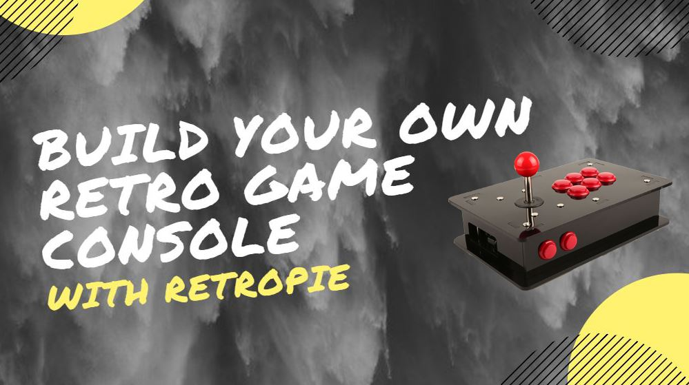

Programming is one of the few technological things you can learn that are the most popular, aside from Networking related jobs/classes in school. With programming, you can create the most simplistic code, this being "Hello World" where in almost any coding language, it teaches you the very basics and what the language is capable of.


Example of Actual Code + Output of the Code for "Hello World"
Every programming language has Pros & Cons. They all have pros that might be cons in another languages, so technically there is "no perfect" coding language. Some programmers have preferences like C++, or C#. Some others prefer Python and Java. It is mainly all personal preference which coding langauge you start to learn first, but from these articles, it shows that Python is the easiest to learn due to the syntax being the most simple. It does state, that one con is that if one small thing is off, everything breaks and you would need to find the error. Another erorr is that slow, compared to other languages such as C++/C# or Java.
Here is a trusted website that tells you advantages/distadvantages of one such programming language that my team will be using for our own project


Now for some examples of projects people have made using Raspberry Pi's using Python. These examples are not only the projects you could, there are hundres, even thousands out there. You just need to search for them, or even make your own unique custom project that no one else has done!
This user by the name of "yida" posted a tutorial on how to make you're raspberry pi into a retropie to play retro games!

A programmer named Adiran Rosebrock created a Security Camera for his fridge and outside using OpenCV with a Raspberry Pi.
A user on Youtube named Eben Kouao created a Smart Touchscreen Mirror with Face ID recognition!
We had attempted to create a Raspberry Pi Controlled car, but due to programming errors / issues, we were unable to finish it before needing to submit our proejct.